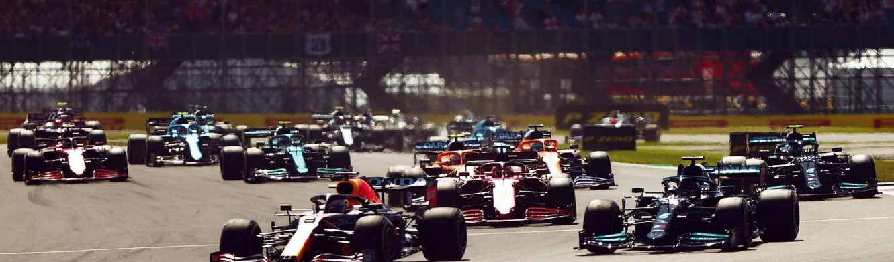
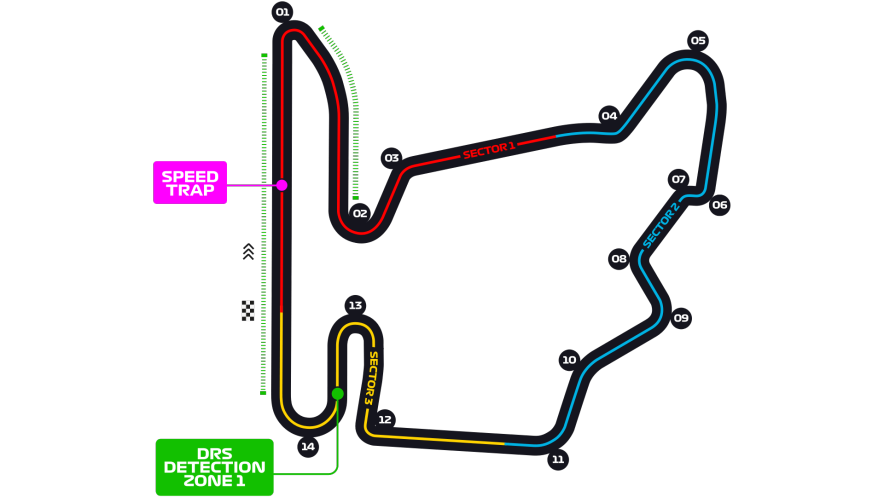
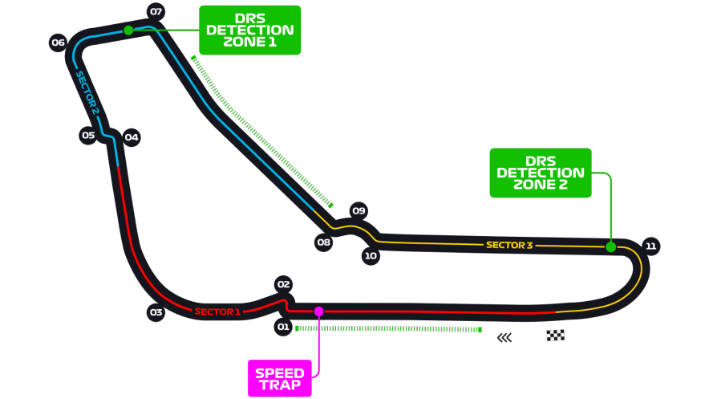
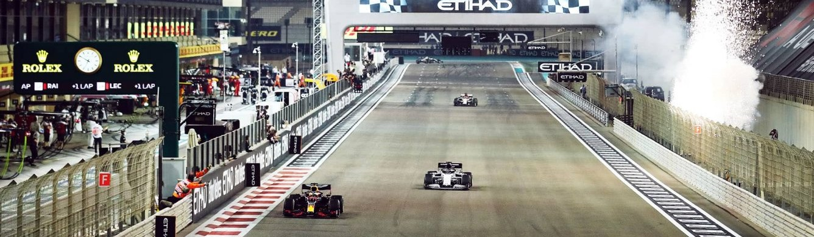

Calendario Temporada 2022
Bahrain
El Circuito Internacional de Baréin es un circuito típico de Hermann Tilke
con muchas rectas largas y curvas lentas.
Con una distancia por vuelta de 5.412km y 57 vueltas por delante bahrain nos da un gran premio
emocionante en la calidez del desierto.
15 curvas despues de sectores muy rapidos y 3 zonas de DRS
ponen a prueba la destreza y precision de cada piloto.
Jeddah
El GP de Jeddah, ubicado en arabia saudita, nos trae una de las carreras mas emocionantes,
no solo por su velocidad y sus 27 curvas, la mayoria a gran velocidad, sino tambien
por sus 3 zonas de DRS que hacen mas emocionantes los adelantamientos y batallas por puestos.
El Circuito de unos 6.174km, fue utilizado por el gran circo por primera vez en 2021

Australia
Ubicado en la ciudad de Melbourne, el Albert Park Circuit, se ha convertido en un clasico de la
F1, donde se corrio por primera vez en 1996.
Con tan solo 14 curvas en 58 vueltas y una longitud de 5.278km es uno de los mas rapidos del calendario
Italia
El circuito, Autodromo Enzo e Dino Ferrari, volvio a ser parte de la categoria reina del
automovilismo en el 2020, por dsiposiciones del COVID-19.
La suma de tan solo 19 curvas y una longitud de 4.909km nos da un circuito un tanto corto,
por esta razon tenes 63 vueltas por delante, con tan solo un sector de DRS, los pilotos
se deben valer de su calidad de adelantamiento en las curvas.
.png)
Miami

Situado en el Hard Rock Stadium el circuito hace su debut en el 2022, con un pista muy rapida
en la que se pueden alcanzar velocidades de hasta 320 km/h.
Un callejero espectacular, compuesto por 5.41km, 19 curvas y 3 potenciales zonas de DRS

Catalunya

Construido en 1992 como parte de el programa de desarrolo olimpico de barcelona. Aun asi fue
fundado en 1989 y la primer carrera fue en 1991 en el Spanish Touring Car Championship.
Un clasico de la F1 que hace disfrutar a los fanaticos con sus 4.675km, 16 curvas y dos zonas
de DRS, ademas de poner a prueba las cualidades de cada piloto

Monaco
Iconico, es la palabra que describe el GP de Monaco.
Un cicuito callejero que lleva al limite a los monoplazas y pilotos, con curvas y chicanas
tomadas a velocidades increibles que hacen vibrar a la aficion.
Con un total de 78 vueltas y una longitud de 3.337 km es uno de los GP mas esperados del calendario.

Azerbaijan
Velocidad y curvas de 90°, son dos elementos que definen a este circuito callejero ubicado
en la ciudad de Baku.
Inaugurado en 2016 y su primer Gran Premio en 2017, con la victoria de Daniel Ricciardo,
compuesto por 20 curvas, 6.003km y dos zonas de DRS, tiene uno de los momentos mas demandanetes
para los pilotos, los cuales pueden alcanzar los 350km/h en la recta principal y deben frenar al
maximo para lograr tomar la primer curva de 90°, es un fin de semana lleno de emociones.

Canada
El Circuit Gilles-Villeneuve, incluido por primera vez en 1978, esta lleno de emocion y adelantamiento
gracias a sus tres zonas de DRS y sectores rapidos, que permiten batallas por posicion increibles.
Uno de los preferidos de los pilotos, esta compuesto por 4.361km y 14 curvas, en 70 vueltas de carrera.
Gran Bretaña

Silverstone, otro clasico de la era moderna de la Formula 1, en uso desde 1950.
5.891km de recorrido en conjunto a 18 curvas y dos zonas de DRS a maxima velocidad,
constituyen una de 52 vueltas del GP.

Austria
71 vueltas de velocidad pura, el Red Bull Ring tuvo su primera participacion en el año 1970.
Un circuito corto de tan solo 1:05:619 de duracion por vuelta, es similar a un tobogan,
en el sector 1 es todo una subida hasta la cima y pasando la curva 3 todo se hace en bajada,
sumandole los 3 sectores de DRS y las pocas curvas (10), nos dejan como resultado un fin de
semana de adrenalina.
Francia
El Circuito Paul Ricard es uno de los mas completos, con zonas muy rapidas,medias y lentas.
Pilotos y aficionados disfrutan de este majestuoso recorrido de 5.842 a lo largo de 53 vueltas,
la recta principal en conjunto con el sector 2 conforman la zonas rapidas y las 15 curvas
conforman los zonas de velocidad media y lenta.

Hungria
El GP de Hungria toma parte en el circuito Hungaroring, con una longitud de 4.381km y
un total de 70 vueltas por delante, con dos zonas de DRS en las cuales solo una es ideal para adelantamientos.
Debido a la naturaleza de la pista, estrecha, sinuosa y frecuentemente empolvada por falta de uso, en el Gran Premio de Hungría
se forman generalmente grupos de hasta seis vehículos siguiendo todos a uno un poco más lento al que no es posible doblar.
Este es uno de los circuitos en donde la estrategia en las paradas es más crucial

Belgica
El favorito de los fans, Spa-Francorchamps, una pista de 7.004 km, 18 curvas, 44 vueltas,
dos zonas de DRS y pura adrenalina.
SPA es un cicuito donde los monoplazas mas rapidos y agiles tienen la ventaja, pero no solo
es trabajo del vehiculo, sino de los pilotos en mantener el control, ya que es conocido
por los inicidentes ocurridos en 1998
Holanda
El Pilotaje, la clave de el Circuit Zandvoort, con 14 curvas, dos zonas de maxima
velocidad con ayuda del DRS, y una longitud de 4.259km. Con su vuelta en el 2019 al gran circo
vuelve loco a los fanaticos con su estilo de la vieja escuela.
Monza
No por nada es el circuito mas atractivo para los fanaticos de la velocidad, ya que en el
se pueden llegar a las velocidades maximas de los monoplazas, su recorrido de 5.793km compuesto
por dos zonas de DRS y solo 11 vuelas, las cuales la mayoria son rapidas.

Singapore
El Marina Bay Street Circuit se lleva el premio de ser uno de los mas hermosos circuitos,
adornado por las luces de la ciudad, es una carrera un tanto lenta debido a sus 23 curvas,
la mayoria de 90° o menos, pero buscando el equilibrio con sus tres zonas de DRS, y
una longitud de 5.063km.

Japon
El GP de Japon llega de la mano de Honda, ya que gracias a ellos se realizo este circuito en 1962 y
fue remodelado para en 1987 alvergar su primera carrera de la F1, el mismo tiene un recorrido
de 5.807km, con un total de 18 curvas y tan solo una zona de DRS
USA
Volvemos a Esatdos unidos, esta vez a Texas, para vivir el GP que se lleva a cabo en el
Circuit Of The Americas, con 5.513 km, 20 curvas y dos zonas de DRS, este se lleva un lugar
en la clasificacion de alta velocidad, por sus muchas curvas abiertas y rectas largas
Mexico
No es sorpresa que este sea una de las fechas que mas gustan, el GP de Mexico es festivo, emocionante
y vibrante, con una pista muy rapida y un publico muy calido.
Las 3 zonas de DRS son las principales para rebasar, con 17 curvas y una longitud de 4.304km

Brazil
Ya en la ante ultima carrera podriamos tener un campeon, el fin de semana que nos espera en
estas fechas no solo es emocionante por la carrera, sino por la definicion del titulo.
El Autodromo Jose Carlos Pace tiene una longitud de 4.309km acompañado de 14 curvas muy rapidas
y dos zonas de DRS

Abu Dhabi

Nos vestimos de gala y llegamos a los Emiratos Arabes a disfrutar de nuestra ultima carrera
del año, aqui se define todo, en el Yas Marina Circuit, inaugurado en 2009, con un recorrido de
5.281, 16 vueltas y dos zonas de DRS casi pegadas